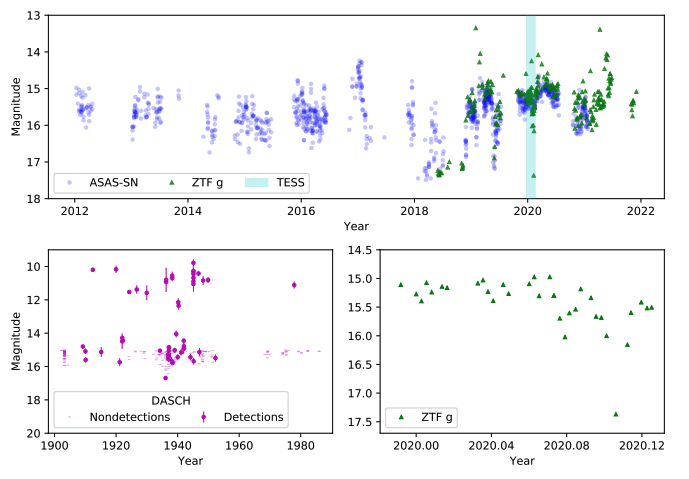
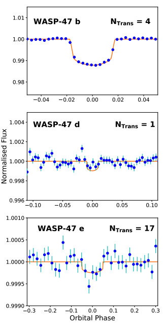
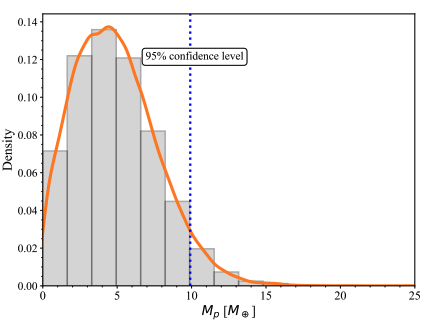

STATUS UPDATE: The Cycle 5 proposal deadline is March 18th, 2022 at 4:30pm EDT. Find out more here
Welcome TESS followers to our latest news bulletin. This week we feature three new papers from the archive, enjoy!
Hitting a New Low: The Unique 28 h Cessation of Accretion in the TESS Light Curve of YY Dra (DO Dra) (Hill et. al., 2022) :
YY Draconis is an intermediate Polar which has been observed by TESS. A power spectrum of the system indicates that there is stream fed accretion most of the time except for a day in 2020 when it entered a flat-bottomed low state during which the only periodic signal was ellipsoidal variation and there was no substantial flickering. The authors believe that this low state was cased by a halt in the accretion, something that has been observed only once before in an intermediate polar.
Ground based observations taken at the same time indicate that when there is little to no accretion the system fades to 17.37 mag in g-band. This brightness comes from the white dwarf and its red dwarf companion.
Additional observations of YY Draconis by other ground-based facilities in 2018-2019 also indicate fading of the system, but not to the low extent observed by TESS. All observations however suggest relatively frequent halts in the accretion for this system. See this fascinating paper for more details.
Revisiting WASP-47 with ESPRESSO and TESS (Bryant et. al., 2022) :
WASP-47 is a planetary system which is home to the following:
- WASP-47 b: A hot Jupiter with a period of 4.159 days
- WASP-47 c: A giant planet with a long period of 588.4 days
- WASP-47 d: An outer Neptune with a period of 9.031 days
- WASP-47 e: A super-Earth with a period of 0.7896 days
Observations of WASP-47 by TESS were used to refine the orbital ephemerides of the transiting planets in the system, specifically for WASP-47 b there is a 17.4 min shift in the transit time.
Measurements from the ESPRESSO spectrograph were also used to obtain a new radial velocity for the system, which was used to refine the masses of both WASP-47 d and e. For WASP-47 e the mass was derived as 6.77 M⊕ and it has a bulk density of 6.29 gcm−3.
Additionally the authors used K2 data to detect a periodic modulation that corresponds to a 32.5 day stellar rotation. See this paper for more information about this multi-planet system.
Validation and atmospheric exploration of the sub-Neptune TOI-2136b around a nearby M3 dwarf (Kawauchi et al., 2022) :
In this paper the authors study a new sub-Neptune sized planet candidate TOI-2136.01 which orbits a nearby M dwarf (located 33.36 pc away and has an effective temperature of 3373 K) with an orbital period of 7.852 days.
TOI-2136.01, now known as TOI-2136b, was validated as a planet using TESS data, ground-based multi-color photometry, and radial velocity measurements with the InfraRed Doppler (IRD) instrument on the Subaru Telescope. Stellar and planetary parameters were also derived from these data, with a planetary radius of 2.2 R⊕ and mass of 4.7 M⊕ obtained.
The atmosphere of the planet was investigated using high-resolution transmission spectroscopy, focusing on helium 10830 Å absorption lines. Through their studies the authors place an upper limit on the equivalent width of < 7.8 mÅ (95 % confidence) and on the absorption signal of < 1.44 % (95 % confidence). Read this paper for more information of this new sub-Neptune.

Fig. 1: Taken from Hill et. al., (2022).YY Dra light curves from ASAS-SN, ZTF, and DASCH. Top: Overlaid ASAS-SN (blue circles) and ZTF (green triangles) light curves with including a deep low state observed by TESS shown in the cyan shaded region. The ASAS-SN light curve is relatively uniform for the first few years. However, multiple intermittent low states begin to appear around 2018-2019. The observed low states reach a consistent minimum magnitude. Bottom-left: The DASCH light curve, with detections shown as circles and non-detections as dashes. As explained in the text, non-detections with limits brighter than magnitude 15 have been excluded. The quiescent magnitude is comparable to that observed by ZTF. While there are numerous outbursts throughout the observational period, no low states comparable to those in the ASAS-SN and ZTF data are present. Bottom right: Enlargement of the ZTF observations obtained during the TESS light curve. The faintest datum (g = 17.37 ± 0.12) was obtained during the deep low state, when accretion was negligible.

Fig. 2: Taken from Bryant et. al., (2022). Phase-folded TESS photometry of WASP-47 zoomed around the transit events for Top: WASP-47 b Middle: WASP-47 d and Bottom: WASP-47 e. For all panels the photometry (blue circles) has had the transit models from the other two planets subtracted and is binned in phase on a time scale of 20 minutes for WASP-47 b and WASP-47 e and 60 minutes for WASP-47 d. The orange lines show the best fit transit models from the modelling in Section 3.1 of the paper.

Fig. 3: Taken from Kawauchi et. al., (2022). Planetary mass posterior distribution. We can place an upper limit on the mass of TOI-2136b of 9.9 M⊕ (95% confidence level, dashed blue line).